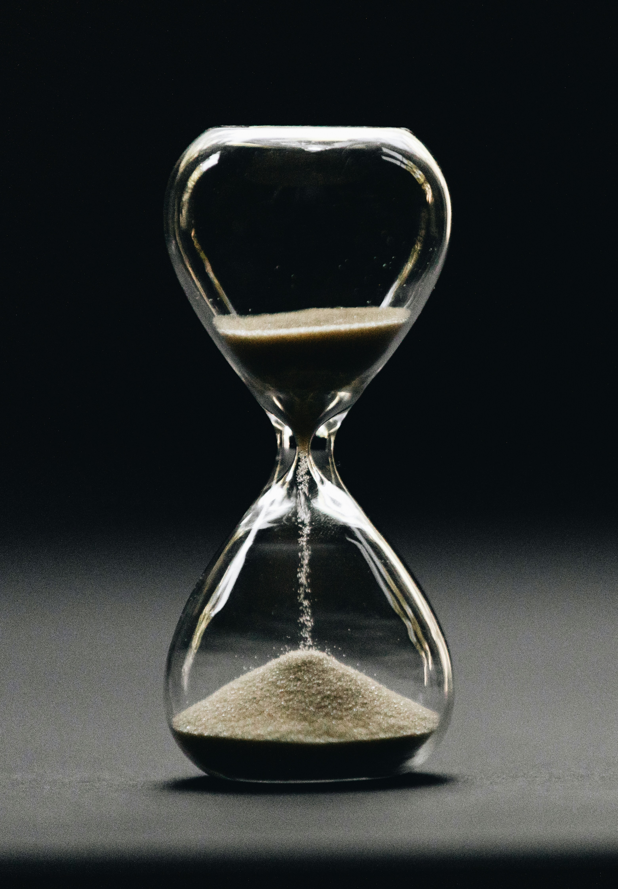

Comment gérer son temps efficacement au quotidien
La gestion du temps est une compétence cruciale pour améliorer sa productivité et réduire le stress. Beaucoup de personnes se sentent dépassées par leurs responsabilités, et pourtant, avec de bonnes méthodes, il est possible de mieux organiser ses journées et de tirer le meilleur parti de chaque heure. Une gestion efficace du temps permet de consacrer plus de temps à ce qui est réellement important et d’atteindre ses objectifs plus facilement.
1. Établir une liste de tâches
Commencez chaque journée en dressant une liste de toutes les tâches que vous devez accomplir. Notez-les sur papier ou utilisez une application de productivité. L’important est de visualiser clairement vos objectifs pour la journée, ce qui permet de rester concentré et de ne rien oublier.
2. Prioriser les tâches
Toutes les tâches n’ont pas la même importance. Utilisez la méthode Eisenhower pour distinguer les tâches urgentes et importantes, celles qui sont importantes mais non urgentes, urgentes mais peu importantes, et enfin celles qui sont ni urgentes ni importantes. Concentrez-vous d’abord sur ce qui apporte le plus de valeur.
3. Planifier des plages horaires
Attribuez à chaque tâche un créneau horaire précis. Cela permet de structurer votre journée et de limiter les périodes d’inaction. Planifier vos tâches aide également à éviter la procrastination et à réduire le stress lié aux délais.
4. Éviter les distractions
Les distractions sont l’ennemi principal d’une bonne gestion du temps. Désactivez les notifications inutiles, éloignez-vous des réseaux sociaux et créez un environnement calme pour travailler. La concentration est essentielle pour accomplir vos tâches efficacement.
5. Utiliser la technique Pomodoro
Cette méthode consiste à travailler pendant 25 minutes, puis à prendre une pause de 5 minutes. Après quatre cycles, une pause plus longue de 15 à 30 minutes est recommandée. La technique Pomodoro permet de rester concentré et de gérer son énergie mentale sur la journée.
6. Déléguer lorsque c’est possible
Si certaines tâches peuvent être effectuées par d’autres, n’hésitez pas à déléguer. Cela libère du temps pour les activités qui nécessitent réellement votre attention et vos compétences, et permet de mieux gérer votre charge globale.
7. Faire le point en fin de journée
Chaque soir, prenez quelques minutes pour revoir ce que vous avez accompli et ajuster votre planning pour le lendemain. Cela permet de rester organisé, de mesurer vos progrès et de réduire le stress lié aux tâches non terminées.
8. Maintenir un équilibre
La gestion du temps ne consiste pas uniquement à travailler davantage, mais aussi à inclure du temps pour soi, pour se détendre et se ressourcer. Un équilibre entre travail et repos améliore l’efficacité, la créativité et le bien-être général.
En appliquant ces stratégies de manière régulière, vous pouvez améliorer significativement votre gestion du temps, accomplir vos tâches plus efficacement et réduire le stress quotidien. La clé réside dans la planification, la priorisation et la discipline personnelle. Avec ces techniques, chaque journée devient plus productive et satisfaisante.